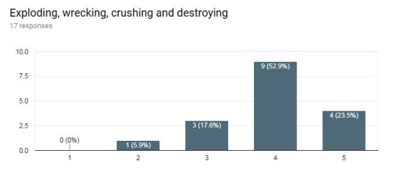
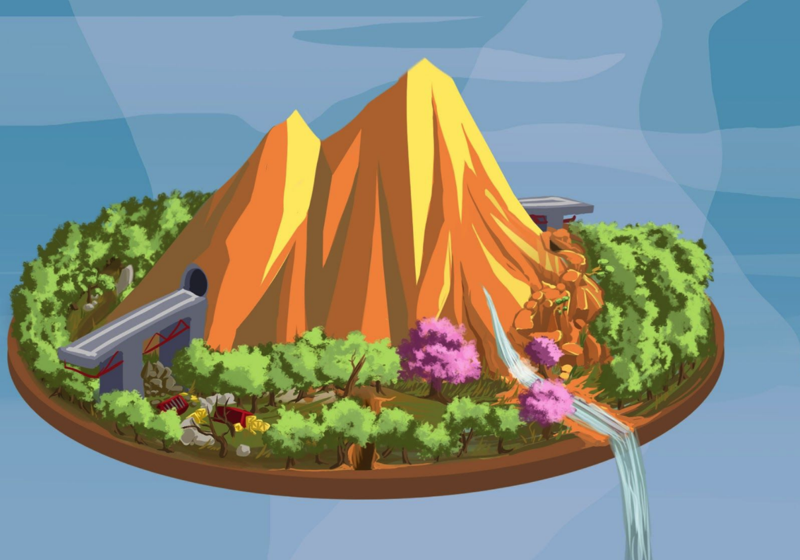
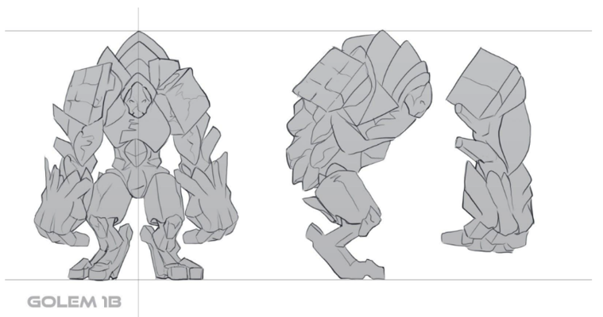
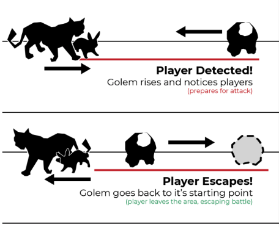

Uma aventura cooperativa 2.5D sobre um coelho e um tigre que precisam confiar um no outro para salvar a floresta, sem um único ato de violência gratuita.
David Smith (Game e UI/UX Designer) · Leonardo Yuji (Artista 3D) · Otavio Colombini (Artista 3D, designer de história) · Victor Perrotte (Game Designer, Desenvolvedor, Artista Geral)
Um público amplo (10+) de jogadores casuais que gostam de jogos indie e de explorar fases com um toque de batalha. Pessoas que querem um jogo imersivo, guiado pela história, e que estão dispostas a descobrir cada pedaço do seu mundo, e que gostam de alternar momentos mais lentos (exploração, diálogo) com combates empolgantes ou trechos rápidos, como os momentos de runner.
Por que esse público?
Nossa pesquisa breve (uma amostra de 17 respostas) mostrou que os jogadores hoje tendem fortemente a jogos de tiro, luta e estratégia. Quisemos fugir dessa tendência e oferecer algo mais sincero e cativante, sem violência gratuita, ao mesmo tempo em que transmitimos valores que sentimos faltar no mundo.

Resultado da pesquisa para “Explodir, destruir, esmagar e demolir” (de 1 a 5, 17 respostas): 9 responderam 4 e 4 responderam 5, com 1 resposta 2 e 3 respostas 3.
Como chegamos até eles?
Um estilo de arte distinto. Gráficos 2.5D com texturas que lembram pintura e um efeito de “pincelada”, cores saturadas e personagens intrigantes. O objetivo é atrair jogadores mais jovens e quem gosta de explorar um universo como obra de arte.
Uma história emocionante e profunda que atrai todas as idades e levanta questões, valores e aprendizados, com novas mecânicas de exploração, quebra-cabeças e combate defensivo que evita o conflito direto sem deixar de ser empolgante.
O que falta no mercado?
Jogos para crianças e adolescentes raramente oferecem jogabilidade cooperativa com uma história profunda. Wild Saga ensina amizade, lealdade, confiança e colaboração de verdade entre dois personagens muito diferentes, misturando ação eletrizante e mistério com momentos mais tranquilos. Também desafia os jogadores com novas mecânicas cooperativas, plataforma, quebra-cabeças e combate, atualizando ideias clássicas em combinações criativas.
Inspirações
Tomba · PS1
Super Mario Odyssey · Switch
Donkey Kong Country Returns / Tropical Freeze · Wii
Odin Sphere · PS2
Prinny 2 · PS2
Dark Cloud 2 · PS2
Breath of Fire IV · PSX
Escopo do projeto
Antes de nos comprometermos com o jogo completo, adaptamos todas as funcionalidades principais (progressão no mapa, quebra-cabeças, diálogos, mecânicas cooperativas e jogabilidade em spline) em um único cenário de demonstração enxuto. Ele combina todas as mecânicas para teste e adaptação e funciona como um tutorial que apresenta o jogo.

Concept art do cenário de demonstração: uma ilha flutuante com montanha, floresta, ruínas e uma cachoeira. Por Victor Perrotte.
Mundo & história
Construção de mundo
Um mundo com um nível de tecnologia mais ou menos de 1850, com apenas algumas cidades-estado isoladas ligadas por trem. A maior parte do jogo acontece longe delas: florestas, planícies, cavernas, ruínas e vales. As ruínas de civilizações anteriores, animais ou humanas, são centrais para a narrativa, e o objetivo é passar uma sensação mística em cada ambiente, porque forças sobrenaturais movem a história.
Sinopse
No fundo de uma floresta, algo desperta forças adormecidas dentro de uma ruína e causa um terremoto.
Um trem de circo é sacudido, e um vagão cai de uma ponte na floresta. Dentro da jaula há um Tigre.
Um Coelho que está por perto encontra a jaula e, depois de relutância e conflito, decide ajudar. Um pedaço solto da ponte cai e abre a jaula antes que ele consiga.
Perdidos e desorientados, os dois precisam trabalhar juntos apesar de objetivos diferentes: o Tigre quer voltar para casa, o Coelho quer salvar a dele. O único caminho para ambos é descobrir o que causou o terremoto.
Mais fundo na floresta, eles encontram “pedras que se movem” e uma ruína desconhecida guardada por um golem de pedra gigante, despertado e distorcido por uma energia maligna. Ele reconhece a linhagem de protetores do Coelho e pede aos heróis que ajudem os outros guardiões elementais a se libertarem.
Três atos
Ato 1 · Convivência
O Coelho precisa cooperar com um predador para voltar para casa. O Tigre está em um lugar desconhecido e perdido. Cenas-piloto:
Cena 01. O Coelho encontra a jaula e enfrenta um dilema moral: abrir para um predador? Quando ele estende a mão para a chave, uma pedra cai e a abre. Ele insiste que teria feito isso. O Tigre nunca fica totalmente convencido.
Cena 02. Um obstáculo que só o Tigre consegue atravessar. O Coelho recusa no início, depois muda de ideia e o convence a seguirem juntos.
Cena 03. Eles encontram uma criatura estranha e evitam uma luta.
Cena 04. Descansando, eles conversam. O Tigre lembra da vida no circo e de querer voltar para “casa”. O Coelho se preocupa com a mudança de sua vila.
Cenas seguintes (rascunho). Um golem quadrúpede cresce depois de ser derrotado, e o Coelho foge com o Tigre. O Tigre admite que a vida no circo não era tão boa quanto lembrava. Um Lobo brinca que o Tigre deveria comer o Coelho, e então pede ajuda para encontrar comida. Um golem sequestra um animal e eles o seguem para resgatá-lo.
Ato 2 · Aventurando-se
Eles descobrem de onde vêm os acontecimentos estranhos e que muito do que o Coelho conhecia mudou ou foi destruído. O Coelho vê sua chance de provar seu valor, mas sabe que não consegue fazer isso sozinho. O Tigre, depois de provar a liberdade, começa a repensar a volta ao circo.
Ato 3 · A fusão
Depois de uma luta exaustiva com o último golem, o Tigre é nocauteado. O Coelho continua lutando sozinho e vence, mas o Artefato ainda brilha e seu amigo está morrendo. Ele funde sua magia com o Tigre para salvá-lo. O Tigre se levanta e se torna um golem diferente dos outros, e o Coelho precisa lutar contra seu melhor amigo para libertá-lo.
Final A: o Coelho vence. O Artefato se estilhaça, o Tigre é curado e, juntos, eles voltam para a vila, reconhecidos por sua amizade. O Coelho se torna um guardião humilde e eles ajudam a vila a florescer.
Final B: Fusão. O Coelho se funde com o Tigre em um golem ainda maior e eles passam a usar o poder do Artefato como guardiões da região.
Personagens
Principal · Tigre
Nascido para se apresentar
Criado em um circo, sua vida eram apresentações e treinos, e seu mundo era confinado. Ele nunca conheceu a liberdade, então se sente seguro no que tem e tem medo de perder. Ele sonha em entrar para circos maiores e mais famosos.
Suas melhores memórias são os primeiros aplausos e as brincadeiras com outros animais. Ele esconde lembranças reprimidas do sofrimento de outros animais, incluindo sua mãe. Sua maior alegria é fazer os outros felizes, e ele se torna brincalhão para evitar emoções pesadas. Ingênuo, se entedia fácil, exagerado e confiante mesmo quando está inseguro.
Principal · Coelho
O observador subestimado
O filho mais novo de uma família importante em uma vila com muitas espécies de animais. Seu trabalho é vigiar os arredores e garantir que tudo esteja seguro. Criativo e inteligente, mas sempre subestimado pela família. Responsável, idealista e simpático, com gosto pela solidão.
Sem muita coragem, mas adora investigar o desconhecido e manter o controle. Lembra com carinho de brincar na floresta, mas sofreu tentando provar seu valor, o que aparece como perfeccionismo e insegurança.
O Tigre, concept art de Victor Perrotte.O Coelho, concept art de Victor Perrotte.
Chefes: os Golems elementais
Um Golem por ambiente, cada um de um elemento distinto. São guardiões ancestrais, criados para manter o equilíbrio natural e impedir a destruição descontrolada. A energia misteriosa os despertou, enfraquecidos e corrompidos, e a tarefa do jogador é ajudá-los a recuperar a sanidade. O primeiro é O Rochedo (The Boulder), o Golem da Floresta: talvez o mais velho dos guardiões, ciente dos animais de sua floresta, grato à família do Coelho e intrigado com o Tigre despreocupado criado no circo.
O Golem da Floresta, concept art de Victor Perrotte.

Ficha de personagem do Golem (“Golem 1B”): frente, lado e detalhe do punho.
Inimigos & outros personagens
Inimigos: os asseclas dos golems, “extensões” que se espalham por cada ambiente, além de animais perigosos como lobos, que levam a perseguições ou missões que terminam em batalha.
Animais resgatados: animais da vila do Coelho feridos pelo Artefato. Eles dão missões cujas recompensas ajudam a reconstruir a vila.
Cenários & fases
Ambientes
1 · Lar, a Toca do Coelho
Uma floresta onde vivem os animais “não civilizados”, considerada perigosa pela cidade, mas na verdade um lugar de liberdade, magia benigna, campos verdes abertos e ruínas cobertas pela natureza. Quando a energia do Artefato muda, os campos abertos viram territórios de caça expostos, a mata fechada fica quase sem luz e as ruínas irradiam malevolência.
2 · Subterrâneo, a Escuridão Desconhecida
Cavernas iluminadas apenas pelo luar em cavernas aquáticas, estreitas e sem ar, mas cheias de som: água pingando, sonar de morcegos. As ruínas lembram aquedutos e canos gigantes. Aqui o Artefato traz luz em vez de escuridão, com um brilho intenso contido apenas por uma pilha de rochas na entrada.
Fases (Ambiente 1)
Parte I · Campos Abertos. Começa no vagão caído, depois da primeira cutscene. Um diálogo mostra cada personagem afirmando que não precisa do outro. Três quebra-cabeças ensinam a trocar de personagem, a inverter papéis e um salto longo combinado, para que o jogador aprenda que cooperar funciona melhor. Campos abertos e montanhas passam uma sensação de liberdade, depois surgem áreas mais escuras e inimigos em direção à mata fechada.
Parte II · A Mata Fechada. Mais escura e fechada, já afetada pelo Artefato, e mais longa que a Parte I. Apresenta o combate com pelo menos três golems e quebra-cabeças mais intrincados, e termina na entrada da ruína.
Parte III · As Primeiras Ruínas. Quebra-cabeças e estruturas mais geométricos, com inimigos integrados aos quebra-cabeças. Arquitetura de templo desgastada e coberta de vinhas, com um efeito de partículas roxas marcando a influência do Artefato. Termina com a luta de boss contra o Golem de Pedra.
Base. A vila perdida e destruída do Coelho, que ele jura proteger e reconstruir. Mapa. Divisão clara dos ambientes, mostrando o caminho de cada fase percorrida até agora. O jogo é linear, com ruínas interligadas.
Mecânicas
Movimentação
Plataforma 2D dentro de um mundo 3D: a movimentação segue caminhos retos e curvos, e um recurso de troca de caminho acrescenta profundidade e exploração. Ele também elimina os “poços sem fim”: cair significa apenas voltar por um caminho paralelo, e a mesma mecânica pode surpreender o jogador.
Co-op
Os dois personagens são interdependentes, uma dupla simbiótica. Eles lutam juntos, resolvem quebra-cabeças com a ajuda um do outro e superam obstáculos em equipe. O relacionamento se fortalece ao longo do jogo, acompanhando a história, e os jogadores devem sentir os personagens aprendendo um com o outro. A interface também suporta dois jogadores locais.
Sistema de diálogo
Interação
Trocas curtas e rápidas a partir de interações mínimas: um objeto não interativo, um caminho bloqueado, um NPC com uma missão aberta. Podem se sobrepor quando há vários objetos por perto, nunca atrapalham, somem sozinhos com o tempo e muitas vezes não têm retrato.
Missão
Narrativas de missão com NPCs, exibidas com um retrato do personagem que muda conforme a emoção. Não bloqueiam a movimentação e são avançadas ou puladas com o botão de ação.
História principal
Os mais complexos: trocas longas, possivelmente com animação no estilo de cutscene. Não podem ser pulados de imediato, mas há uma opção “pular história” disponível desde o início pelo botão start/esc.
Quebra-cabeças
Um personagem sempre ajuda o outro a passar por um obstáculo: uma alavanca que só o Coelho alcança, uma parede que só o Tigre quebra. Os quebra-cabeças compartilham uma estrutura, mas são temáticos para cada ambiente. Tipo 1: cinco botões no chão, três pedras e uma balança ligada a uma porta. As pedras e o próprio peso dos personagens precisam equilibrar a balança para abri-la.
Plataformas
Temáticas para cada trecho da fase, por exemplo campo → mata fechada → pântano → entrada da ruína. Obstáculos variados evitam a fadiga, e as paletas de cores escurecem conforme o jogo avança.
Sistema de combate
O combate é defensivo e cooperativo, construído em torno de contra-ataques, não de apertar botões sem parar.
1 · AntesInimigo parado (camuflado) ou patrulhando
→
2 · InícioOs jogadores entram no alcance dele; o HUD troca itens por habilidades
→
3 · ClímaxEsquivar, reagrupar, sinal visual, contra-ataque com 2 habilidades
→
4 · ResoluçãoVitória: acertos suficientes no ponto fraco · Derrota: ambos inconscientes
1 · Antes da luta: o golem patrulha uma área predefinida, ou fica parado como parte do cenário, até os jogadores entrarem na área de perigo.2 · Jogador detectado: o golem se levanta, percebe os jogadores e se prepara para atacar. O golem sempre ataca primeiro.3 · Os jogadores desviam do ataque e uma pista visual mostra que o contra-ataque está disponível. Depois que o inimigo termina o ataque, cada jogador seleciona uma habilidade e a animação começa.

Alternativa: os jogadores escapam. Sair da área encerra a batalha e o golem volta ao ponto de partida.4 · Resolução: se o contra-ataque acerta o ponto fraco, o inimigo é destruído e a batalha é resolvida. Se os dois personagens são atingidos, a batalha falha, e o jogo só acaba se os dois desmaiarem.
Contra-ataque. Depois de esquivar, um sinal visual abre uma janela para combinar uma habilidade de cada personagem. Dependendo da combinação, ele atinge um ponto fraco diferente (frontal alto, médio ou baixo, costas, ou combinações) e só causa dano se corresponder ao ponto fraco do inimigo.
Ser atingido. Se um jogador é atingido, não há contra-ataque. Ele cai inconsciente até o parceiro resgatá-lo na próxima janela. Sugestão: o ponto fraco pode mudar durante a luta.
Evitar o combate. Os inimigos têm uma distância máxima de ativação. Saia dela e eles param de perseguir e voltam.
Loadout. Até quatro habilidades por personagem, escolhidas entre: Proteção, Chute, Investida, Salto Mortal, Bote, Derrubada, Chicotada de Cauda, Chute Deslizante, Arremesso, Agarrar, Cabeçada, Mordida, Arranhão.
Os dez contra-ataques
Contra-ataque
Tigre
Coelho
Alvo
O que acontece
Proteção (Protection)
Proteção
Proteção
Jogador
Evita dano a qualquer um dos jogadores.
Chute Alto (High Kick)
Arremesso
Chute
Frontal alto
O Tigre lança o Coelho para cima e ele chuta a cabeça do inimigo no ar.
Ataque Surpresa (Surprise Attack)
Cabeçada
Salto Mortal
Costas
O Coelho salta sobre o inimigo para ficar de frente para ele enquanto o Tigre ataca por trás.
Agarra-Morde (Grabite)
Mordida
Agarrar
Frontal médio / baixo
O Coelho pula na cabeça do Golem, cegando-o e atordoando-o, enquanto o Tigre morde.
Pega Presa (Pray Catcher)
Bote
Investida
Frontal alto / Costas
O Coelho corre entre as pernas do inimigo para distraí-lo enquanto o Tigre dá o bote.
Arranhão Mágico (Etch a Scratch)
Agarrar
Arranhão
Frontal baixo / médio
O Tigre imobiliza o inimigo por trás enquanto o Coelho pula alto, arranhando e chutando a frente dele.
De Baixo (From Below)
Derrubada
Chute Deslizante
Frontal baixo / Costas
O Tigre empurra o inimigo para trás para que ele role, e o Coelho o chute por trás.
Bola de Demolição (Wrecking Ball)
Chicotada de Cauda
Agarrar
Frontal médio
O Coelho segura a cauda do Tigre e gira contra a barriga do inimigo.
Velocidade É Meu Jogo (Speed Is My Game)
Investida
Investida
Jogador
Aumenta a velocidade dos dois jogadores por um tempo limitado.
Justa (Jousting)
Investida
Chute Deslizante
Frontal alto / médio
O Coelho monta no Tigre com um galho como lança enquanto o Tigre avança.
Coelho ↓ · Tigre →
Proteção
Chute
Investida
Salto Mortal
Bote
Derrubada
Chicotada de Cauda
Chute Deslizante
Arremesso
Agarrar
Cabeçada
Mordida
Arranhão
Proteção
1
Chute
2
Investida
9
5
Salto Mortal
3
Bote
Derrubada
Chicotada de Cauda
Chute Deslizante
10
7
Arremesso
Agarrar
8
4
Cabeçada
Mordida
Arranhão
6
Matriz de combinações de habilidades: habilidades do Coelho na lateral (azul), habilidades do Tigre no topo (laranja). As células verdes numeradas são os dez contra-ataques, numerados como na tabela acima. Passe o mouse sobre um número para ver o contra-ataque. As linhas e colunas sombreadas aparecem assim na matriz original.
Batalhas de boss
O boss de cada ambiente reflete o tema daquele ambiente, com habilidades que definem o contra-ataque permitido. O Rochedo (Ambiente 1):
Perfil
Personalidade: calmo, determinado, estratégico. Especialidade: Defesa Inquebrável, bloqueando 100% do dano por 3 segundos. Ponto fraco: frontal / médio. Vida: 3 corações · Dificuldade: 9¾
Habilidades
Pilares Ascendentes: um soco que ergue pilares de terra entre o boss e os jogadores. Esmagamento no Chão: um soco cruzado de curto alcance enterrado no chão. Soco Voador: ele recua para o fundo, joga uma pedra para cima e lança os punhos em três locais.
Suba nos pilares erguidos para alcançá-lo.
Quando um soco fica preso no chão, ataque o cristal em seu peito.
No fundo do cenário ele é invulnerável, mas recuperar os punhos leva tempo, criando uma brecha.
Jornadas & base. Depois que um boss cai, um personagem é desbloqueado e volta para a vila, onde os heróis reconstroem casas. Os aldeões dão missões (“Jornadas”) que mandam os jogadores de volta a fases anteriores para encontrar objetos e materiais. Concluí-las rende moeda do jogo, que também pode ser comprada com dinheiro real, usada para comprar novas habilidades.
Sistema de exploração
O jogo incentiva explorar para conectar cenário, história e personagens, com recompensas entregues por meio de portais (áreas desbloqueadas por itens-chave, quebra-cabeças, habilidades ou história) e espetáculo (cenários que carregam a narrativa, cutscenes ao entrar em lugares, objetos quebráveis e recompensas visuais depois de bosses e quebra-cabeças).
Objetos interativos
Todos usados com o botão de ação: vasos, paredes frágeis e obstruções (quebrar), caixas e pedras (empurrar), portas (desbloquear áreas), alavancas (ativar), cipós (puxar, cortar, balançar, agarrar), montes de terra (cavar), placas de pressão (pressionar).
Colecionáveis & ferramentas
Ingredientes de receitas, borboletas, pinos de boliche (malabarismo), itens de circo, esculturas de pedra em forma de animais. Objetos de exploração: pedras brilhantes (itens-chave), vaga-lumes (formam uma lanterna), Bun’n Boots™ (andar sobre espinhos), portais de viagem rápida.
Interações inesperadas
Chão frágil que quebra, árvores secas derrubando galhos, pedras rolando, estalactites caindo, inundação de cavernas, armadilhas de animais (colmeias, formigueiros, laços, redes) e um clarão ofuscante que confunde os controles.
Animação de cenário
Pássaros que levantam voo, grama reagindo aos passos e ao vento, partículas ambientes (folhas, esporos, poeira, gotas) e uma névoa roxa para tudo o que se relaciona a inimigos, que fica amarelo-brilhante quando a ameaça diminui.
Habilidades de exploração
Adquiridas de forma linear por meio de quebra-cabeças, exploração e história. Cada uma é apresentada em uma cena em que os personagens aprendem um com o outro.
Coelho
O Grande Salto · pulo mais alto (segure o pulo). Aprendido fugindo de um Tigre furioso em direção a um penhasco.
Para dentro do Buraco · cavar para alcançar áreas escondidas. Aprendido prendendo mini-golems em um buraco.
Abre-te Sésamo · puxar alavancas. Aprendido libertando o Tigre de uma armadilha de rede.
Força Escondida · empurrar objetos pequenos. Aprendido libertando o Tigre dos escombros.
Tigre
Vida Perigosa · agarrar bordas. Aprendido quase caindo de um penhasco.
Ai, Mamãe, Eu Sou Forte · empurrar objetos grandes. Aprendido resgatando o Coelho de uma caverna inundada.
Aqui está o Johnny · quebrar paredes frágeis com uma investida.
Sério, Estou de Dieta! · pressionar placas de pressão. Aprendido quando uma briga afunda uma placa escondida.
Sistema de UX
Look & feel
Uma interface simples que contrasta de propósito com o mundo pictórico do jogo: um tema mítico menos explorado, em cores que lembram pedra, com toques modernos. A tipografia é Josefin Sans para títulos e Mukta para textos menores, ambas atemporais. Os botões são padronizados em todos os menus e opções.
Elementos
Ícones
Os ícones de habilidade são silhuetas dos personagens, coloridas conforme quem as usa (azul = Coelho, laranja = Tigre, verde = ambos). Há ícones para as 13 habilidades, os 10 contra-ataques (com esboços rápidos de seus efeitos), itens e as habilidades de exploração, que são ligadas por um caminho visual no menu e aparecem conforme são desbloqueadas.
Retratos & diálogo
Dois tipos de retrato: retratos do HUD para o personagem selecionado e o estado do outro (seguir / ficar / desmaiado), e retratos de diálogo com emoções (feliz, triste, confuso, bravo, assustado). As caixas de diálogo seguem o estilo do jogo e são lidas como uma conversa entre os personagens.
Feedback
Uma resposta clara a cada ação significativa (nova habilidade, quebra-cabeça ou missão concluída, nova área) para reforçar recompensas intrínsecas e extrínsecas.
HUD contextual
O HUD mostra habilidades, retratos em silhueta e itens, e se adapta ao momento: itens durante a exploração, habilidades em batalha. Ele some após 30 segundos sem interação. O ícone de uma habilidade usada brilha. No multiplayer local, ele é espelhado à direita para que os dois jogadores vejam suas próprias habilidades e itens.
Troca de personagem
Dois displays de retrato: um para o estado do personagem não controlado (seguir ou ficar), outro para quem está selecionado. Um personagem em espera aparece dormindo, um em movimento aparece de quatro, e o personagem selecionado passa na frente do outro e toma seu lugar.
Menus
Menu de habilidades: habilidades com seus atributos e ícones, as combinações que podem formar (quantidade e, depois de descobertas, nomes), conexões com as habilidades selecionadas e habilidades de exploração.
Inventário: itens como ícones com tooltips. O botão de ação seleciona e revela opções de uso. Itens de missão trazem uma dica.
Missões / mapa: missões integradas ao mapa. Quem dá a missão e os pontos de entrega aparecem na cor da missão, pontos de viagem rápida e lugares secretos aparecem depois de descobertos, e os gatilhos filtram entre Tudo · Missões · Viagem rápida · Quebra-cabeças · Lugares secretos. Caminhos e itens não são exibidos.
Opções e menu principal: configurações, créditos, salvar, carregar e sair.
Wireframes
Wireframes das principais telas, em 16:9. Clique em uma tela para ampliá-la. O arquivo de trabalho está no Figma (link no topo da página).
HUD
HUD
Menu de habilidades
Menu de habilidadesMenu de habilidades · contra-ataqueMenu de habilidades · habilidade de exploração
Diálogo de interação ao lado da HUD do Jogador 2Diálogo de missãoCutscene
Opções
Opções
Programação
O jogo é dividido em sistemas, cada um responsável por uma área, com o menor acoplamento possível. Alguns sistemas herdam de classes-pai.
1Um GameManager global coordena os sistemas. Cada sistema cuida de uma área, com o menor acoplamento possível, e alguns herdam de classes-pai.
·As cores seguem o diagrama original. As chamadas entre os sistemas não foram redesenhadas aqui.
Movimentação em spline
A movimentação é um sistema de física 2D na Unity, mas o mundo é 3D: o eixo X corresponde à distância ao longo de uma spline de Bézier. A cada frame, calcula-se a posição Vector3 na spline que corresponde à posição X em 2D, de modo que objetos 3D não têm colliders, e objetos com colliders ou rigid bodies não têm visual.
GenerateCollider roda no início da fase e constrói um polygon collider 2D a partir de raycasts ao longo da curva, representando o caminho caminhável.
Position Collider aproxima a posição de um objeto em relação à curva e sua distância do início, que se torna o valor X em 2D.
Todo objeto que se move em 2D é atualizado em 3D pelo script Projector, usando a mesma lógica.
1No início da fase, o GenerateCollider lança raios ao longo da curva do mundo 3D e monta um colisor poligonal 2D: o caminho caminhável.
2O Position Collider aproxima a posição de um objeto em relação à curva; a distância até o início vira o valor X em 2D com que a mecânica trabalha.
3O movimento roda em 2D. O MasterMove move os atores, que têm colisores e rigid bodies, mas nenhum visual.
4Todo objeto que se move em 2D é atualizado em 3D pelo script Projector, usando a mesma lógica.
5O lado 3D tem os visuais e a animação: objetos 3D não têm colisores.
Post mortem
Semestre 1 · aprendizados
Focamos em um sistema de movimentação construído sobre as bases da Unity, mas com uma abordagem única. Sem uma referência clara, virou tentativa e erro, o que custou muito tempo. Em retrospecto, trabalhar dentro das capacidades da Unity e dedicar mais energia a conceito, narrativa e visual teria sido mais simples.
A modelagem 3D low-poly, buscando um visual de animação 2D, ajudou desde os semestres anteriores, mas precisava de mais desenvolvimento.
Semestre 2 · aprendizados
As estimativas de tempo foram baixas demais. O jogo ficou complexo demais para quatro pessoas em um ano, e o erro foi tentar construir um jogo completo em vez de um mais simples. As fases de ajuste (juntar scripts, refinar um ciclo de caminhada) levam muito mais tempo que a primeira execução.
Aprender novas habilidades pelo caminho, como rigging e animação 3D, significou refazer assets. O Trello facilitou a organização mais do que o HacknPlan, mas os cards se encaixam mal em elementos de jogo interdependentes.
O que faríamos diferente
Semestre 1: priorizar a pré-produção na essência central, na história e, acima de tudo, nos conceitos visuais, para que a direção de arte antecipe cada funcionalidade. Nos organizar melhor com as plataformas disponíveis e distribuir as tarefas de forma mais uniforme.
Semestre 2: testar a execução das tarefas principais mais cedo para ter uma noção realista de tempo, e cortar o escopo de acordo, para um plano mais conciso e gerenciável.